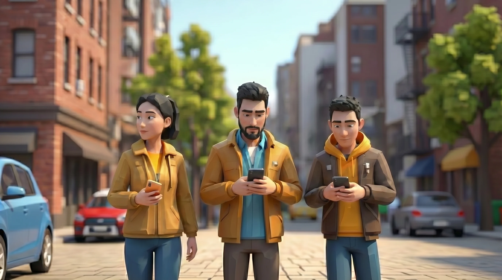
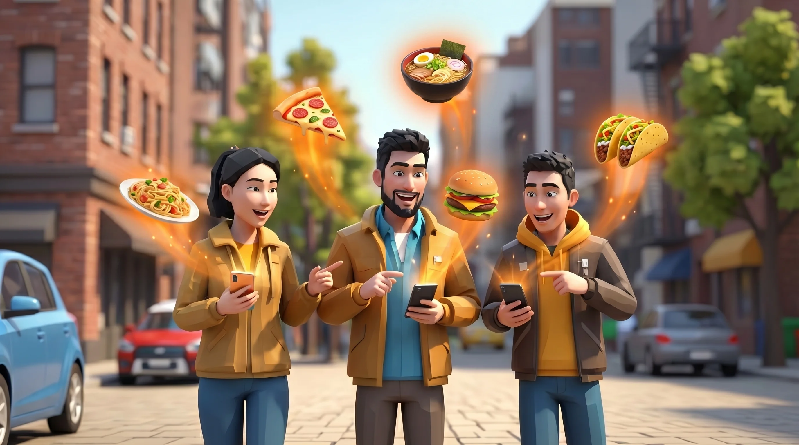
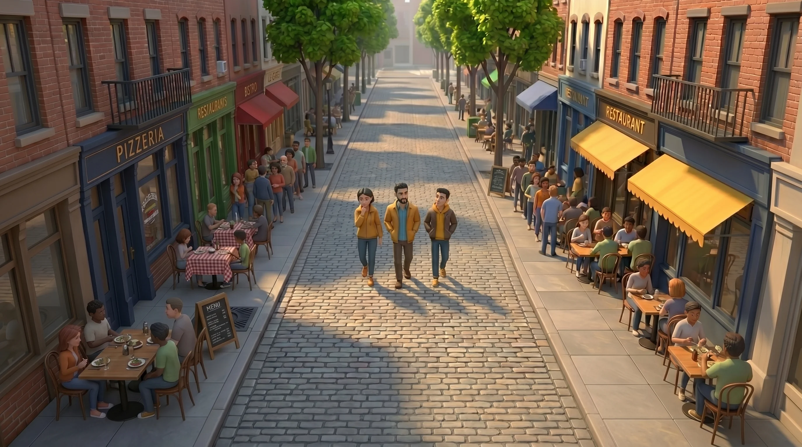
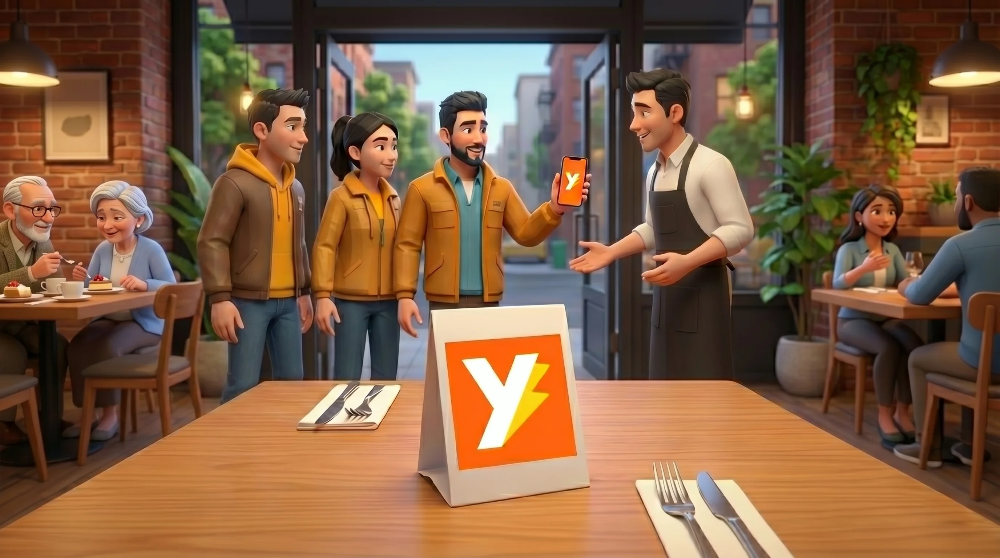
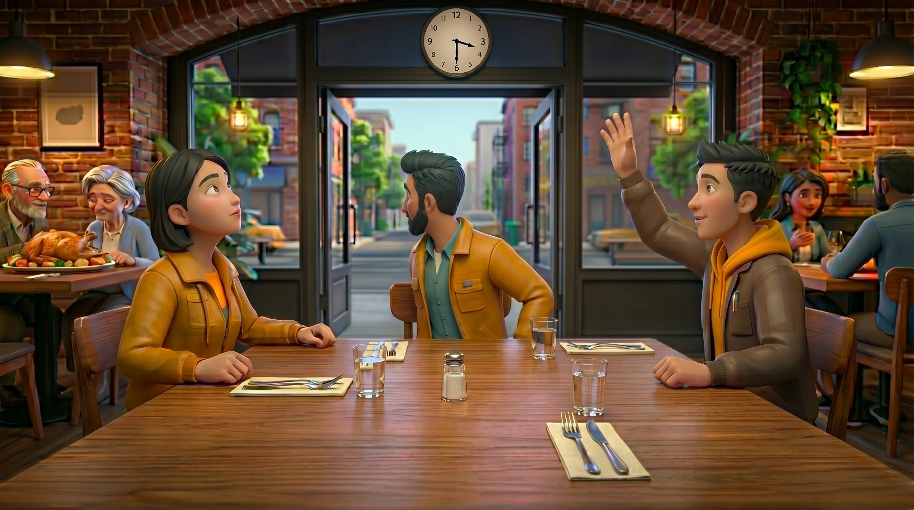
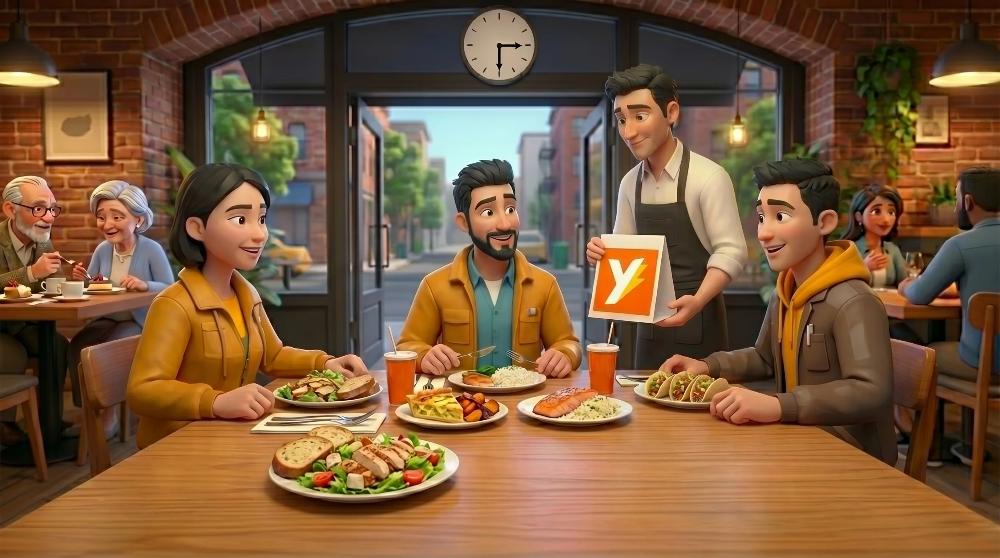
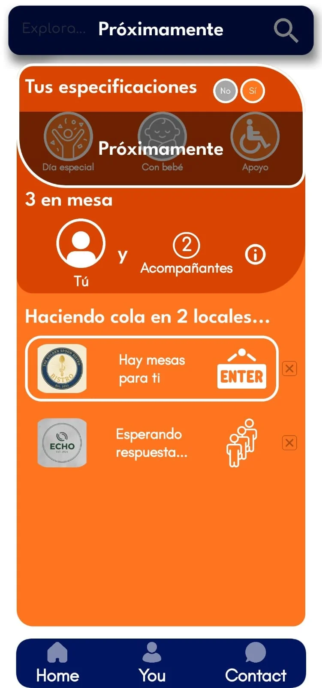
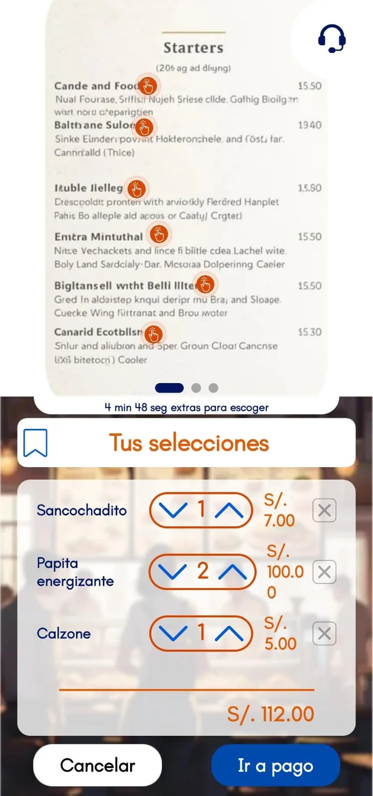
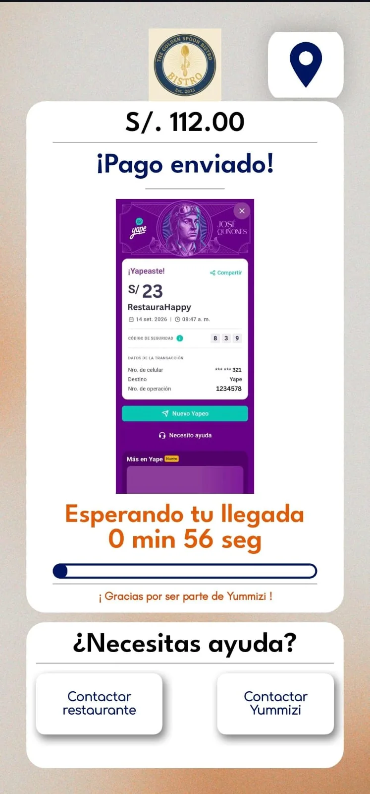

Llega, siéntate y disfruta: Tu comida lista en el momento exacto.
Nunca más mires el reloj mientras tienes hambre. Con Yummizi eliges tus platos favoritos antes de salir y tu mesa te espera lista para disfrutar.
¿Cómo funciona para ti?
Una demostración rápida de cómo tu próxima salida a comer será la más rápida, fresca y placentera.
Descubre el camino Yummizi
Before...

Diners used to hope that there would be available table at the restaurant they want
With Yummizi...

Diners can confirm their table and dishes even before arrive
Before...

Queues were unpredictable for diners
With Yummizi...

Diners can join virtual queues and restaurants can control them with ease
Before...

Diners used to wait while they were hungry. Normalized, wasn't it?
With Yummizi...

Diners wait much less time or simply don't wait for their food
Tu restaurante predilecto, ahora a un toque de distancia
Diseñada para que descubras, reserves y comas sin fricciones ni pérdidas de tiempo.

1. Colas Virtuales Simultáneas
Pide tu turno en varios locales cercanos y decide sobre la marcha con tiempos de espera reales.

2. Menú Interactivo en Vivo
Fotografías reales, disponibilidad al instante y especificaciones exactas para la cocina.

3. Mesa y Pedido Confirmados
Tu comida entra a preparación para coincidir exactamente con el minuto en que tomas asiento.
Comer delicioso nunca fue tan rápido
Si no quieres combinar el hambre y la espera en el mismo plato, escoge Yummizi 😉
Descargar Yummizi para Comensales